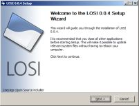

Welcome
This is the official homepage for the Litestep Open Source Installer, LOSI. This is where you find information about it and the latest news.
News
2009.05.07 — LOSI 0.4.5
Fixed a critical bug and thought I'd make a new release.
The fix should make SLI-ThemeManager work again.
2009.05.07 — Issue Tracking on github.com
The developers behind github have now added issue tracking, so I decided to move everything from lighthouseapp over to the LOSI github page to keep the code and issue reports at one place.
2009.03.18 — LOSI 0.4
New release of LOSI with LiteStep 0.24.8 Final
The main changes/fixes/additions are the following:
- Upgraded to LiteStep 0.24.8 Final.
- Choosing to install for all users now actually does what it says. The shell will be set in the HKEY_LOCAL_MACHINE part of the registry.
- Installing for all users will give all the users on the computer their own copies of the theme and personal folders.
- Updated to the latest stable version of xPaintClass (Update 6).
- The code for launching Explorer when you uninstall LOSI is much more reliable now.
- Added http://www.ls-themes.org/modules/download/ as a NLM site and got rid of nbi-studios.
For the full list of changes, check out the commit log I have at github.
Get LOSI 0.4 from the downloads page.
2009.01.17 — Version Control and Issue Tracking
I have started using Git for version control of LOSI source code. The code is hosted at github.com, http://github.com/Tobbe/losi/.
I have also gotten an account at lighthouseapp.com for issue tracking. http://losi.lighthouseapp.com/projects/23511-losi. There you can see what known bugs there are in LOSI and what feature requests I have gotten for LOSI. By going to the milestones you can also see what's left to do before another release comes out.
I will evaluate these services. If I don't like them I can always go back to what I was using before...
I haven't moved all the bugs etc from this page over to lighthouse yet, but I obviously plan to do so in the future.
2008.10.19 — Virus
I've gotten a couple of reports that ClamAV reports that LOSI contains a virus. The virus it finds is Trojan.PSW.IEPass. No other virus program finds any viruses in LOSI so it should be safe to treat this as a false positive.
2008.09.16 — LOSI 0.3
I have a new release out with the following changes
- Added a new page that warns the user if he/she is trying to install LiteStep when there already is some version of LiteStep installed to the computer.
- Fixed the bug where the uninstaller would remove too much (it didn't keep the personal files even if you asked it to).
- Minor changes to the default popup menu.
- Made it possible to associate .box files with a text editor. (.box files are used by the module LSBox.)
- Localized the section selection checkboxes.
- Updated to xPaintClass 1.0 Update 5.
- Added SLI-ModuleManager to the utilities.
- Made the "WhereProfiles" page autodetect where the profiles are on the currently installed LiteStep (if there is a currently installed LiteStep).
- Fixed a bug in SectionTheme. It could overwrite existing themeslist.rc and themeselect.rc files
- When browsing for evar paths the Find File dialog will default to $PROGRAMFILES if it thinks the current path is "weird".
- SetShell would always try to set the shell to C:\LiteStep\litestep.exe no matter where you installed LiteStep under certain conditions. This is now solved.
- Made the uninstaller stay open even after it is done to allow the user to read the uninstallation log. The uninstaller closes when the user presses the "Finish" button.
And the folowing changes are patches I have gotten. (Thanks a lot for these patches!)
- Added release_notes.txt to the installation
- Removed the "read-only" checkbox from the evar browse dialogs
- Repositioned the gui elements on the evar configuration pages to be evenly spaced and aligned on both pages.
This is the page where you can find the download.
2008.06.15 — Previous Installation
I have added a page to the installer that detects previous LiteStep installations and tells the user how to handle that if it thinks the user has to do anything.
2008.06.07 — Updated the Bugs and ToDo page
I've updated the Bugs and Todo page with all bug reports I've gotten from different users. I have also set the goal for the next release. If you know of any bug or feature you want that isn't on the list please don't hesitate to contact me (Tobbe) about it.
2008.06.02 — LOSI 0.2
Now that LiteStep 0.24.8 RC1 is out I thought it would be a good time to release a new version of LOSI.
Here's a list of things that has changed since version 0.1
- Updated to LiteStep 0.24.8 RC1.
- Made the file association code work again. I don't know when that stopped working.
- Fixed a bug that sometimes caused the installer to not create the ThemesDir and the two .rc files in it.
- Fixed the "Slow switching between evar pages in installer." bug.
- Updated to the latest version of SLI-ThemeManager (thanks Anydmon).
- A new page has been added that checks for prerequisites (Internet Explorer 4 or newer and Visual C++ DLLs).
- Made the uninstaller better at cleaning up after the installation.
- Added xDesk settings to personal.rc.
- Added some basic sanity checks to the installation path so no one tries to install LiteStep to C:\Windows or other places equally stupid.
Find the download on the downloads page
2008.06.01 — Prerequisites
I've been working on a new page for the installer. It tells the user what prerequisites they need to install in order for LiteStep and the included theme to work. It is almost done. I just have to get someone to translate it to German and French.
I've put up a page with all the prerequisites and a download link to them here: prereq.html
2008.01.31 — LOSI 0.1
I'm really excited about this latest release of LOSI. It has a really great feature: Install without rebooting or even logging off the computer! Thanks to ilmcuts for finding the info on how to do this.
The list of changes since the last version:
- It's possible to install (and uninstall) LS without rebooting or even logging off the computer.
- I've fixed the bug where you couldn't install a .lsz theme archive if the full path to it contained spaces.
- There used to be an extra !recycle in the !popup menu entry that updates the themes list. That has been removed.
- Added the posibility to not create any start menu icons.
- I've added zBM's latest french translations.
- The bug regarding registry paths and usernames that Andymon found has been fixed. It might affect installations to "Documents and Settings" as well, I have to investigate that further.
- Fixed a bug in the installer that prevented Explorer from starting as the shell.
- Fixed another bug in the Uninstaller that would make it delete a bunch of system settings from the registry when uninstalling if LS wasn't set as the shell.
2008.01.29 — Changelog
This is pretty much just a copy/paste from the LOSI changelog.
- Added the posibility to not create any start menu icons.
- More work as gone in to the "install ls without rebooting the computer" feature. Mostly it's been changes to the finish page code.
- I've added zBM's latest french translations.
- The bug regarding registry paths and usernames that Andymon found has been fixed. It might affect installations to "Documents and Settings" as well, I have to investigate that further.
2008.01.16 — Fixed bugs and added features
I have fixed a few bugs in the last couple of days. The first one is that you couldn't install a .lsz theme archive if the full path to it contained spaces. The second thing I fixed was to remove the extra !recycle when updating the themes list in the popup. Thanks to a feature request I have now added an option not to create any start menu icons.
I have also been working on installing Litestep without without having to reboot the computer, or even loggin off. I have most of the code in place, I just need to test all the new and modified code before I can release it.
2008.01.13 — Bugs and todo items
I have added lots of stuff to the Bugs and ToDo page. There are both very easy and a little harder stuff on that page, so whatever your level of knowledge there is something you can do! Please help me make LOSI the best installer it can be.
If you have told me about a bug that isn't on that list (and that is still in LOSI), please let me know and I'll add it. Also, if you have reported one of the bugs and your name isn't written after it, just tell me so and I'll add that too.
2008.01.09 — LOSI 0.0.9.2
New version of LOSI. Just some minor fixes/updates
- LSAutoHideModules is on by default
- $IM$ autodetection works better
- SLI-ThemeManager should work from any directory
- Removed loose-screws as a NLM site and added nbi-studio instead.
Direct download: LOSI-0.0.9.2.exe
2008.01.08 — Changed release plans
According to the Bugs and ToDo page the next version of LOSI is supposed to be able to install Litestep without rebooting the computer. But because of the security issue with loose-screws Andymon found over at ls-universe.info I have decided to make a release before adding that "no reboot" feature.
The Bugs and ToDo page has been updated to reflect this.
2008.01.04 — GS and other things
I have added LSAutoHideModules to personal.rc so that this setting will be turned on by default. If anyone has a good explanation as to why this is a bad idea, please let me know. I've also fixed the registry value for SLI-ThemeManager. I haven't tested that yet, but I suspect it will work as Andymon told me how it was supposed to look.
I have also played with GlobalSchemes, GS, today. I wanted to see if I could get it working with OTS2, and I think I succeeded. I'm currently running Fractal.Design's Laser.Dock that requires GS to work. After some testing I expect this to be included in the installer.
2008.01.02 — Instant messenger
The installer does its best to provide good default values for all the evars. It does this by looking in the registry for the program associated with a certain filetype. It will for example look for the program that opens .txt files when filling in $txteditor$.
Instant messenger programs doesn't have a good file extension like .txt or .avi to look for, so what I used to do was just to use the default installation path to MSN Messenger, %PROGRAMFILES%\MSN Messenger\msnmsgr.exe. I still do this, but I have made it a little bit smarter by checking to see if that file actually exists. If it doesn't I look for the default installation directory for Windows Live Messenger. If that file can't be found either the installer goes in to the registry and looks to see if Miranda IM is installed, and if it is it uses that for $im. If Miranda isn't found either it gives up and sets $im to an empty string.
2008.01.02 — More webpage activity
I have decided I want to update this webpage more often. So basically I'm going to write something here every time I write something in the losi changelog, or when I get a new feature request or bug report. I'll try this for a while to see how many news items this generates. If it's too much work I might decide to cut down on the reporting a bit.
To take advantage of any improvements and/or changes to LOSI I write about here you will have to check out the code using SVN and compile your own installer, ask me nicely to compile it for you (I'm usually in #litestep on irc.freenode.net) or wait for a new release of LOSI to be made available.
2007.12.30 — LOSI 0.0.9.1
The file association for .lsz files doesn't work in LOSI 0.0.9 so I have decided to release a bugfix version. This release also includes an updated engines.list file for use with the module LSXCommand.
2007.12.30 — LOSI 0.0.9
The time has finally come for a new version of LOSI to be released! Here's a list of some of the things that has changed since the 0.0.8 release:
- LOSI now gives the options of doing a "Normal" install and doing an "Advanced" install. Advanced means you are given more choices during the installation
- LOSS (the shell switching util) and LOEC (the evar configuration util) are now written in lua
- Andymon's great SLI-ThemeSwitcher is the util of choice for managing themes
- It comes with the latest xPaintClass
- The uninstaller has gotten much better since the last release
- All the known critical bugs, and a lot of the other bugs too, have been fixed
Almost all the time I have spent on LOSI for the last two months has been spent on the uninstaller. I hadn't really bothered with trying/testing it before but now I felt I had to do some work on it. I'm very pleased with it now.
Go grab it from the downloads page.
2007.11.10 — Status report
Wow! Almost ten months since I last wrote something here. Fortunately that doesn't mean I haven't done anything to LOSI during that time!
The LOSI sources has gotten a new home. You now need to point your SVN client to svn://svn.litestep.info/losi/ to check out the source.
I have updated the Bugs and ToDo page. You can now see what needs to be done before the next release will be out.
2007.01.25 — Screenshots
I've put some new screenshots up on the Screenshots page. The-golem gave them to me, thanks.
2007.01.24 — 0.0.8
I think this deserves it's own news posting!
Today I present to you the newest public beta of LOSI! Some have called it "the fabled installer", but now it's here ;) I hope you like it and find it usefull. This version is still OTS2 and comes with ls 0.24.7 final. I'm planning to move to OTS3 and GS in the next release that isn't just a bugfix. (I will call that release 0.1.) Hopefully LOSI itself will be pretty good right now and shouldn't require any extensive modifications to be considered usable. The next big thing I'll have to do is probably to look at all the utils. I have to admit I haven't tested them out as much as I would have wanted.
Please tell me what you think about this version of losi and how it can be inproved.
I will try to continously update the Bugs and ToDo page as I get reports and requests from anyone who tests losi. I will also try to update the screenshots page with screenshots from the current version of losi and it's utils.
Enjoy!
2007.01.24 — Updates
Wow! Almost a whole year since the last news on this page.
A lot has happend since then. You've probably already notieced that this page has moved. LOSI 0.0.7 has come and gone. It was never publicly released, but a select few has tried it out and mostly liked what they saw. I have done heavy testing of it and I think I've solved all critical bugs.
2006.02.16 — 0.0.6
New version of the installer! Yay :) A lot has changed since the last release, that's why I decided to call it version 0.0.6. Version 0.0.5 actually has been released, but only to one or two testers. Most notable change is that I have totaly changed how LS is set as shell. I have also decided to remove the theme installer becase it had too many bugs. SetShell has been ported to c++ and should now run on all windows versions without the need for any extra dlls/runtimes.
For all changes, go to LOSI's dev-page
And the new download can, as always, be found on the download page
2005.11.25 — Old update
I actually compiled this version a few weeks ago, but never put it up here until now. Can't really remember what's new but I'm sure it's better than the 0.0.4.5 version :p Head over to the downloads section to grab it.
2005.10.31 — Bugs/Tickets
I have moved the bugs to the development page for this project. The two critical bugs has gotten some attention in SVN, but I haven't made a build of it. So, if you are installing on anything that's not XP you should check out the source from SVN and build it yourself.
2005.10.19 — Minor update
Just a small update to correct some of the bugs discovered. To see what I fixed take a look at the green items in the bugs list
2005.10.17 — First public beta
The first public beta is released. Please download it and try it out as much as you can. But do remember that it is still in beta, so it might mess up your computer. It has not been tested on Windows 95/98/98SE or ME, so if you have any of these operating systems I would love it if you can tell me how it works. What are you waiting for, get over to the downloads section and grab it! Please also read the "What you can do" page.
2005.10.17 — This homepage is created
This is the very first version of this homepage created to be launched at the same time as the first public beta of LOSI. If you have any comments/complaints about it, please contact me.